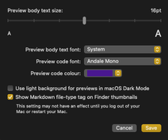

PreviewMarkdown now allows you to modify a subset of the styles that it applies when generating Markdown file previews. These styles include:
Additionally, you can also choose to force PreviewMarkdown to show previews black-on-white, even if your Mac is set to Dark Mode. You can also decide whether PreviewMarkdown adds a Markdown tag to file thumbnails so that you get an indicator of the file’s type in Finder.

You can access the preferences panel from the PreviewMarkdown menu after closing this What’s New panel.
Thanks to everyone who submitted feedback!